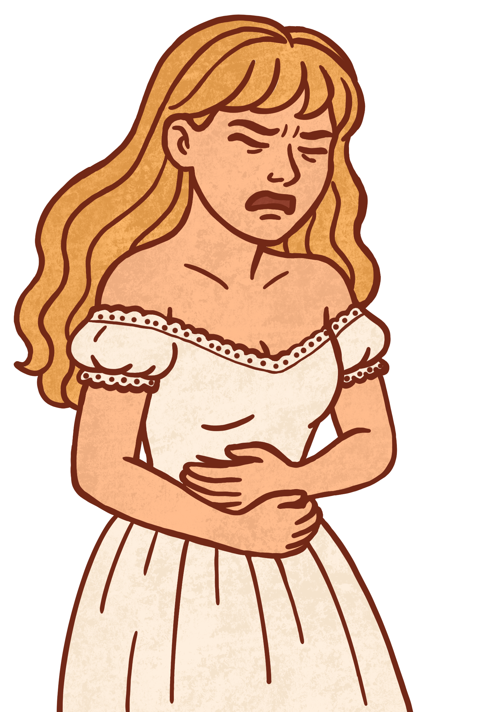

Beyond the Mood Swings
This research aims to explore if (and how) general anxiety levels vary throughout the phases of the menstrual
cycle in women who are naturally cycling, without using hormonal birth control. Additionally, the study
investigates potential changes in social understanding between the follicular and luteal phases by using Theory
of Mind tasks.
Participate Now
Register until July 7, 2025
About Me
Hi, thank you so much for taking the time to learn more about my Master's thesis! My name is Nikki Rademaker.
I am a 24-year-old Master's student in the Media Technology MSc program at Leiden University.
I am especially interested in topics that are often overlooked, like women's health.
With this project, I hope to contribute to research that is more inclusive of the female experience.
I also hope it helps participants and others gain more awareness of how their anxiety may change throughout the
menstrual cycle to better understand, recognize, and manage those possible fluctuations in daily life.
It would truly mean a lot to me if you choose to participate or share this study with someone who might be
interested. Your support helps make this research possible.
Project Overview

This graduation project explores how and if anxiety levels change during the different phases of the menstrual
cycle in women who are not using hormonal birth control.
Participants will fill in a short daily survey for two full cycles to report how anxious they felt each day.
The study also includes a simple task where participants read short stories and answer questions to see how well
they understand social situations.
This is done to find out if the menstrual cycle phase (and possible changes in anxiety) also have an effect on affective Theory of Mind abilities, which involve
recognizing others' emotions and intentions.
The overall main goal of this study is to better understand if and when anxiety tends to increase across the
cycle, and how this might relate to hormonal changes.
Since this research involves personal data, the project required ethics approval from the Media Technology ethics board at Leiden University
to ensure that the study follows all ethical guidelines.
Participation Criteria
- Female.
- Age: 18 or older.
- Natural menstrual cycle.
- Have not used hormonal birth control in the past 2 months.
- Are not planning to use hormonal birth control in the next 3 months.
- English speaking.
What You'll Do
- Complete a short anxiety survey (2-5 min) every day for 2 full menstrual cycles. This survey is called the
State Trait Anxiety Inventory. You will be given simple statements and asked to rate how well they describe
how you felt that day.
- Report menstruation dates and relevant symptoms.
- Take 4 short Theory of Mind tests (15-25 min each) in total. This will be done on days 7-10 and 21-24 of
the menstrual cycle for two cycles.
- Share if you have a relevant diagnosis or are taking medication affecting anxiety. You don't have to
mention which diagnosis or medication.
Your Data Will Be....
- Collected through Qualtrics.
- Securely stored within Qualtrics.
- Anonymized before analysis. A unique ID will be assigned to each participant to track entries securely.
- Used solely for research purposes, and no identifiable information will be shared outside the research
team.
Why Participate?
- Contribute to research on mental health and hormonal cycles.
- Gain insights into your own anxiety patterns across the menstrual cycle.
- Support an academic thesis focused on women's health.
How to Sign Up and What to Expect?
- Email me to let me know you would like to participate.
- On July 7, you will receive a link to the initial survey through the email address you signed up with, which includes:
- An information sheet about the study and contact details (mine and my supervisor's).
- An informed consent form to confirm your agreement to participate.
- After signing the consent form, you will receive a short preliminary survey with 7 questions.
It collects general information on factors that might influence anxiety levels and asks when your previous
menstrual cycle started and ended.
- Once that is completed, you will begin the main part of the study:
- For two full menstrual cycles, you will receive a short daily survey in the evening via email.
- Each survey will be available for 48 hours to avoid collecting unreliable data.
- You will receive reminder emails if the daily survey is not completed.
- On specific days of your cycle (around days 7-10 and 21-24), you will receive a second type of task. This
is a Theory of Mind test with very short stories and questions. These tasks will be available for 3 days, so
you
can complete them at a time that works for you within
that window.
- After filling in the daily survey for two full cycles, and after doing all the Theory of Mind tasks, you will receive one last email asking you to sign the debriefing form.
- All surveys will be sent to the email address you signed up with.
Withdrawing from the Study
You may stop your participation in this study at any time, for any reason. If you decide to withdraw, your data
will no longer be used. You do not have to give a reason. If you have any concerns or would like to
withdraw your data, please contact me through email.